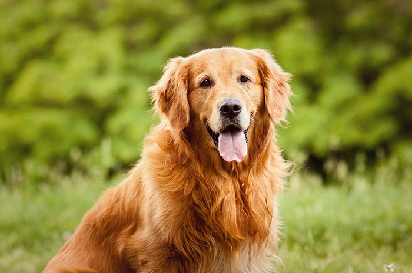

(Canis lupus f. familiaris) je největší domestikovaná šelma a nejstarší domestikované zvíře vůbec, provázející člověka minimálně 14 tisíc let. Obecně se předpokládá, že se jedná o zdomácnělého a umělým výběrem změněného vlka obecného. Úloha psa v lidské společnosti byla vždy rozmanitá, člověku je pomocníkem při lovu nebo při přehánění stád, zaujímá funkci strážce majetku, svého majitele a dalších domácích zvířat, používá se k přepravě nákladů, jako tažný saňový pes nebo, může být cvičen pro použití v ozbrojených složkách či k asistenci hendikepovaným osobám. Zvláště v západní kultuře je nezastupitelná jeho funkce jako společníka člověka. Během dlouhého soužití psa a člověka bylo vyšlechtěno nespočet plemen rozdílné velikosti, proporcí, délky a struktury srsti i povahy.
Je pes vyznačující se vysokou inteligencí, poslušností a jemným charakterem. Je to energický, silný a aktivní pes. Pro svou laskavou povahu jsou dnes retrívři většinou chováni jako rodinní mazlíčci a společníci, ale zástupci této rasy se často uplatní také jako slepecký nebo asistenční pes. Jejich voděodolná srst s hustou podsadou jim umožňuje celoroční pobyt venku, ale retrívři jsou tak společenští psi, že ideální pro ně bude soužití se svou rodinou. Pokud jim zajistíte dostatek pohybu, můžete je velmi dobře chovat i v bytě. Zlatí retrívři jsou přátelští psi, kteří se výborně snášejí se všemi členy domácnosti, včetně děti nebo návštěv. Také skvěle vycházejí s ostatními zvířaty v domácnosti, a to včetně koček.
Je malý, pastevecký pes, původem z Walesu. Svým vzhledem připomíná lišku. Je velmi podobný Pembroke Welsh Corgimu, ale jedná se o dvě samostatná plemena se samostatným standardem a samostatnou historií. Jako pasteveckého psa dnes Corgiho vídáme jen ojediněle. Dnes je chován především jako společník a rodinný pes. Má velmi dobrou dlouhodobou paměť, takže naučené povely si dobře pamatuje. Toho lze využít nejen při výcviku, ale umožňuje to psa zapojit i do různých sportů. Cardigan Corgi je čilý, bezkonfliktní pes, který velmi miluje svou rodinu a je na ni silně citově vázán. K cizím lidem bývá ostražitý, ale ne agresivní. V průměru se dožívá 12-14 let a může žít v městském bytě nebo na zahradě. Nesmí však být odložen někde v kotci, ale potřebuje být součástí své rodiny.
Je středně velký lovecký pes. Zástupci této rasy vynikají pevným zdravím a málokdy trpí nemocemi. Svého majitele si získá nejen svou všestrannou upotřebitelností při lovu, ale také přátelskou a hravou povahou, oddaností, laskavostí, vysokou inteligencí a bezkonfliktním chováním. Proto bývá stále častěji chován jako společník v rodinách s aktivním životním stylem. Majitel však musí každý den uspokojit vysoké požadavky psa na pohyb a vymyslet mu také nějaké duševní zaměstnání. Pokud se tak nestane, vymyslí si pes zábavu sám a uchýlí se k destruktivnímu chování. Oč náročnější je malý münsterlandský ohař na pohyb, o to méně je náročný na ostatní péči. Malý münsterlandský ohař může žít jak ve městě, tak na venkově. Nejlépe mu bude v domku se zahradou. Malý münsterlandský ohař je věrnou zmenšeninou velkého münsterlandského ohaře. Obě plemena se u nás běžně vyskytují.